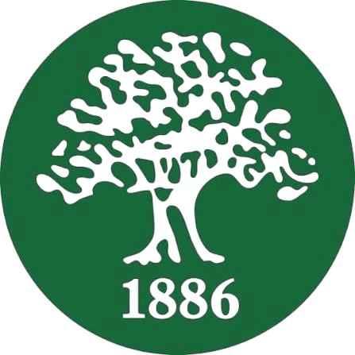

SABIS - Multimedia Developer 09 / 2024 - Present
As a Multimedia Developer, I am responsible of creating inteactive 2D / 3D simulations alone or as part of a team.
I was able to expand my Unity knowledge a lot by moving way beyond just scripting with C# to writing scriptable objects,
editor scripts, unit tests, and reusable code across multiple projects and even going even further by wiring shader codes
and learning how to work with shader graph.
In this role, I was able to develop quickly and aquired new skillsets from using different adobe products (Illustrator,
Photoshop, AfterEffects) to learning 3D modeling with blender which allowed me to create multiple assets to be used
in the projects and optimize existing ones achieving up to 80% reduction in verticies while maitining the quality
of the models.
And as I always seek to put my own touch in everything I do, my passion to C++ lead me to create automations that
helped us work faster by creating some tool that does some repetitive work for example some simple image editing.
- Unity
- C# .Net
- Shaders
- Illustrator
- 3D Modeling (Blender)
- Optimizations
- Time Management